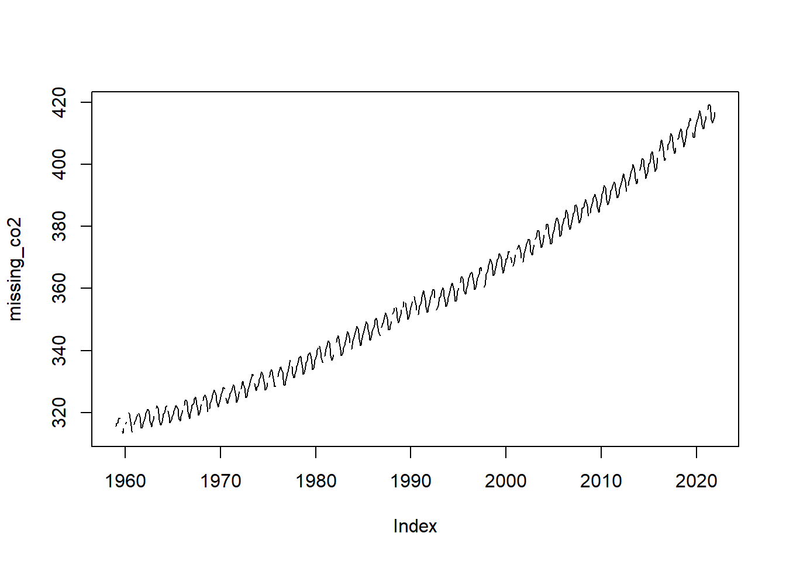
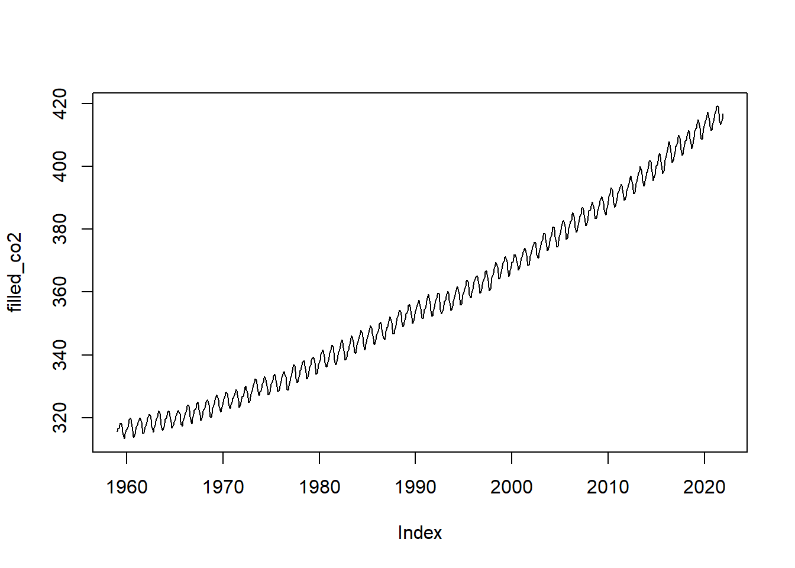
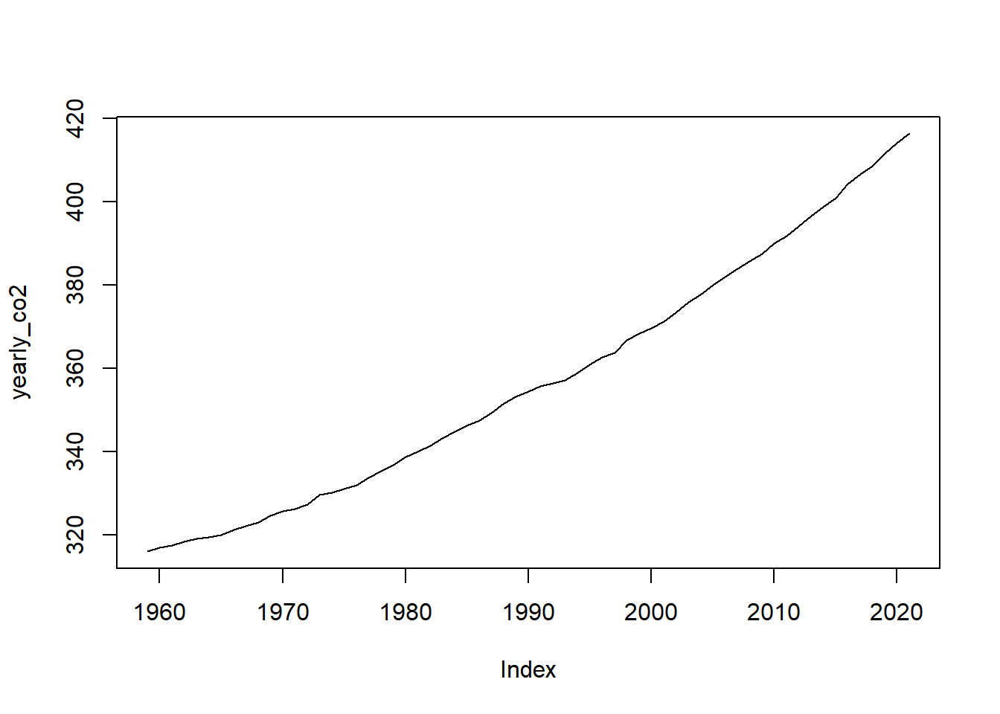
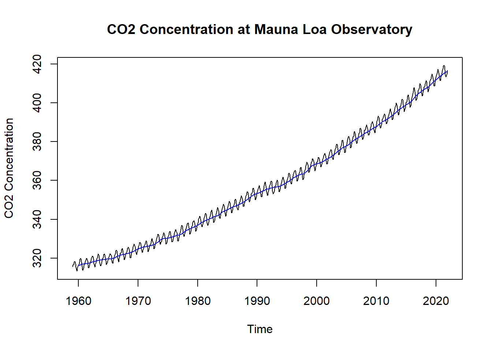

Chapter 5 - Capstone Exercise
The final exercise for this course involves performing a time series analysis on real-world data: Carbon Dioxide concentration at the Mauna Loa Observatory, from early 1959 to Present. You’ll go through the process of importing the data, converting to a time series object (with zoo), imputing missing values, and plotting the resulting data. Additionally, you will create an aggregate of the data, as well as a rolling window average of the data.
5.1 Importing the Data
# The following libraries are included for you
library(zoo)
# Sample data from the Mauna Loa Observatory
# https://gml.noaa.gov/webdata/ccgg/trends/co2/co2_mm_mlo.csv
# Data is already pre-processed as a `zoo` object. It contains missing values,
# so we'll need to impute those!
# This will be hidden from the users, of course.
missing_co2 <- readRDS("data/missing.Rds")5.2 Visualizing the Data
Perform basic data exploration by:
- Printing the first 20 observations with
head(), and, - Creating a plot of the data with
plot()
head(missing_co2, n = 20)## Jan 1959 Feb 1959 Mar 1959 Apr 1959 May 1959 Jun 1959 Jul 1959 Aug 1959
## 315.58 316.48 316.65 317.72 318.29 318.15 NA NA
## Sep 1959 Oct 1959 Nov 1959 Dec 1959 Jan 1960 Feb 1960 Mar 1960 Apr 1960
## 313.84 313.33 314.81 NA 316.43 316.98 NA NA
## May 1960 Jun 1960 Jul 1960 Aug 1960
## 320.04 319.59 318.18 315.90plot(missing_co2)
Notice that there are “holes” in the data? this suggests that we’ve got NA values, which is apparent when we view the first few observations with head().
5.3 Imputing the Missing Values
Impute the missing values with a cubic spline interpolation, then plot the results
filled_co2 <- na.spline(missing_co2)plot(filled_co2)
5.4 Yearly Aggregate
Using aggregate(), create a yearly mean of the data, then plot the data
*Hint: use lubridate::year()
yearly_co2 <- aggregate(filled_co2,
by = lubridate::year,
FUN = mean
)
plot(yearly_co2)
5.5 Rolling Window
Calculate a 12-month rolling window average of the data, then overlay the results (in blue) on top of the original data. Label the x-axis as “Time” and the y-axis as “CO2 Concentration”, and give your graph the title “Monthly CO2 Concentration at Mauna Loa Observatory”
roll <- rollapplyr(filled_co2,
FUN = mean,
width = 12
)
plot(filled_co2,
xlab = "Time",
ylab = "CO2 Concentration",
main = "CO2 Concentration at Mauna Loa Observatory")
lines(roll, col = "blue")
5.6 Given Code
The following code is given to the learners at the beginning of the exercise:
# Question 1: Explore the Data
___(missing_co2, ___ = ___)
___(missing_co2)# Question 2: Impute Missing Values
filled_co2 <- ___(___)
___(filled_co2)# Question 3: Find Yearly Mean Aggregate
yearly_co2 = aggregate(___,
by = ___,
FUN = ___)
___(___)# Question 4: Calculate a Rolling Window
roll <- rollapplyr(filled_co2,
FUN = ___,
width = 12)
plot(___,
xlab = ___,
ylab = ___,
main = "CO2 Concentration at Mauna Loa Observatory")
lines(___, col = ___)